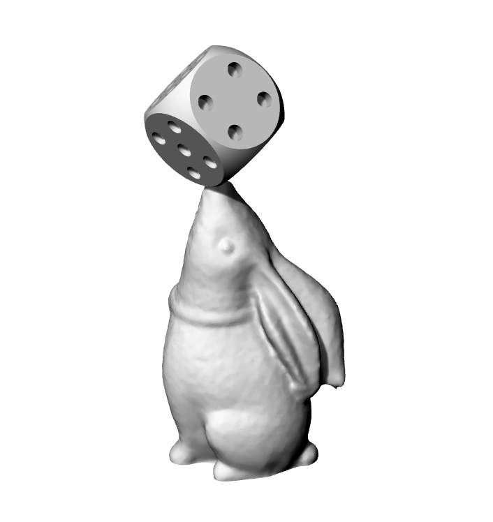
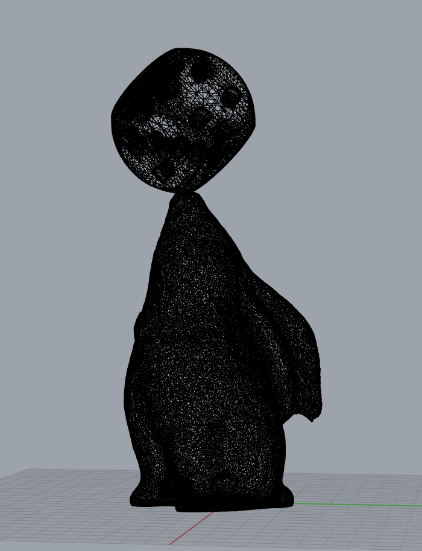
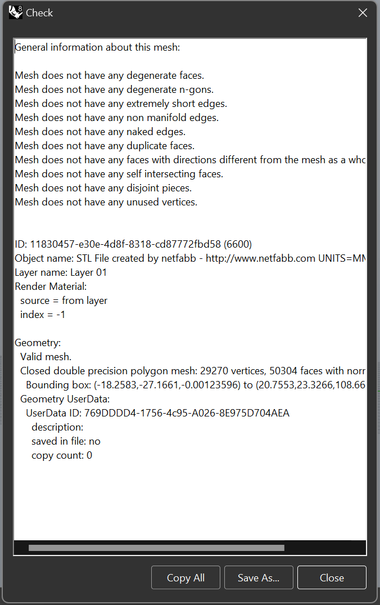
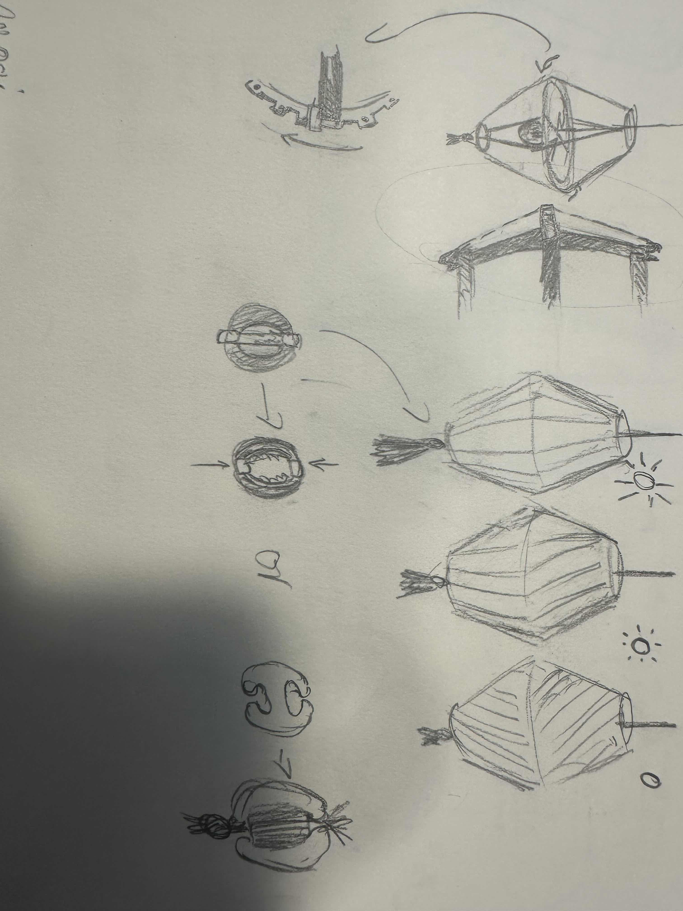
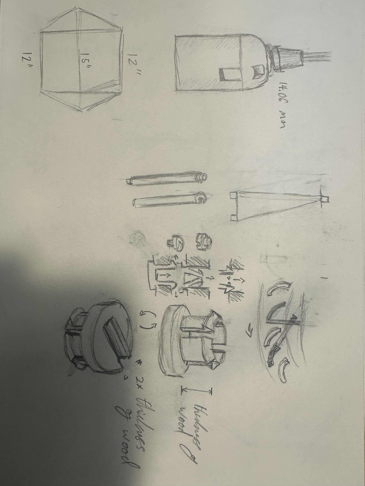
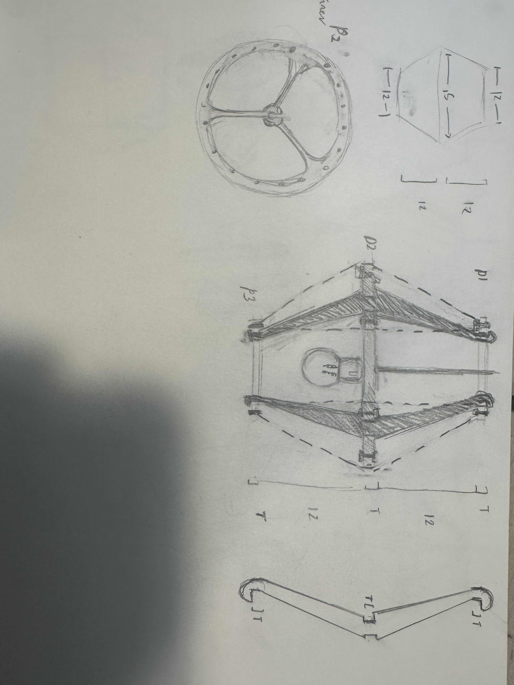

Part 1: Modify the mesh of two STLs to produce a single printable STL. You may use whatever STLs you want, e.g. downloaded from Thingiverse or elsewhere! When exporting the STL from Rhino, it should pass all checks for rapid prototyping.
Part 2: Please make (a start on) a lamp! Using your lamp innereds' measurements as a point of departure, make a lamp that can be assembled around the innereds. You must make the lamp using digital fabrication techniques from prior weeks. You should be able to remove the lamp from the innereds again, so you cannot attach the lamp to the innereds with glue, fasteners, adhesive, etc. This will require you to think carefully about the interface between your parts. Imagine your lamp being in a domestic setting---perhaps it will not be wildly shaken, but it should not fall apart with normal use. For the rest of the lamp, get creative!
Getting Meshy:


Source Files:
https://www.thingiverse.com/thing:25644
top panel file
https://www.thingiverse.com/thing:21842/files
side panel file
I orientated the two meshes to be in the locations I wanted to fuse them in. Then I used Mesh Boolean Union to combine them together and ran check objects to verify the mesh was okay.

Lamps:
Sketches:

Original idea was to use thread for a shade, ended up abandoning this idea for a way that I can make frames for paper shade pieces that will instead be moved.

Sketch of the structure of the lamp kit socket, my 3D printed component and the way the sails will be moved beween the two rotating rings.

The inner lazercut sections of the body, including the inner ring for holding the socket.